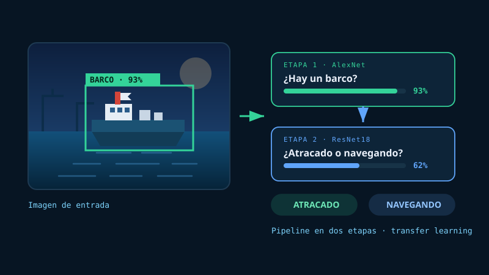
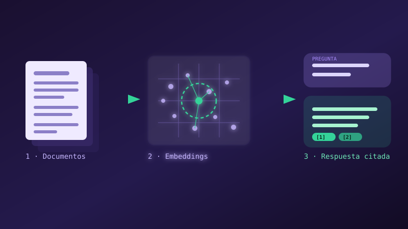

Formación
Último curso del Grado en Ingeniería de Inteligencia Artificial. Base sólida en matemáticas, algoritmia y aprendizaje automático.

Disponible para prácticas y proyectos
Soy Iván, Ingeniero de Inteligencia Artificial. Diseño y entreno modelos de machine learning, y los llevo hasta producción con APIs y contenedores para que resuelvan problemas reales.

Quién soy y qué sé hacer, en tres ideas.
Último curso del Grado en Ingeniería de Inteligencia Artificial. Base sólida en matemáticas, algoritmia y aprendizaje automático.
Modelos predictivos sobre datos biomédicos, visión por computador y sistemas de preguntas y respuestas con LLMs.
No me quedo en el notebook: pipelines reproducibles, evaluación honesta y despliegue con Docker y FastAPI.
Cada tarjeta explica el problema, qué construí y el resultado.

Visión artificial · BioinformáticaEl problema La información sobre riesgos toxicológicos de los alimentos está dispersa en literatura científica poco accesible para el público general.
Qué construimos Aplicación web que identifica la categoría del alimento a partir de una foto con Google Gemini Vision y la cruza con una base de datos toxicológica propia. Arquitectura sin backend: todo se procesa en el navegador con JavaScript ES Modules.
Resultado 12 categorías de alimentos cubiertas, perfil de toxinas con efectos documentados y fuentes científicas citadas. Desplegado en GitHub Pages y archivado en Zenodo con DOI.
Proyecto final de Bioinformática y Medicina · Grado en IA, UDC 2025/26. En equipo con @aroaneira y @luciaesperonn.

Visión por ComputadorEl problema Decidir dos cosas seguidas sobre una imagen marítima: si aparece un barco y, si lo hay, si está atracado o navegando.
Qué hice Pipeline en dos etapas con transfer learning: AlexNet preentrenado para la detección y ResNet18 para el estado del barco, con data augmentation (flip, rotación, color jitter) y early stopping.
Resultado 93% de acierto detectando barcos. La segunda etapa se queda en el 62%: distinguir atracado de navegando depende del contexto del puerto más que del barco, y ese es el margen de mejora que documenté.
Práctica de Visión por Computador Avanzada · Grado en IA, UDC. En equipo con Adrián y Sergio.

LLMs · RAGEl problema Un modelo de lenguaje solo se inventa respuestas si no conoce tus documentos.
Qué hice Sistema RAG: troceo de documentos, embeddings, base vectorial y recuperación de los fragmentos más relevantes.
Resultado Respuestas con la fuente citada, servidas por una API en FastAPI.
Sustituye los textos y las URL https://github.com/mandyss10 en index.html. Para poner una captura real: guarda tu imagen en assets/ y cambia el src.
Las herramientas con las que trabajo cada día.
De los fundamentos a los sistemas en producción.
Álgebra lineal, probabilidad, algoritmia y estructuras de datos: la base que hace que un modelo se entienda y no sea una caja negra.
Regresión, árboles, ensembles y clustering. Aprendí lo más importante: evaluar bien antes de presumir de métricas.
Convolucionales para imagen y transformers para texto. Proyectos de visión por computador y NLP con PyTorch.
Sistemas RAG, APIs con FastAPI, contenedores y despliegue. Buscando prácticas donde aportar en proyectos reales.
Estoy abierto a prácticas, colaboraciones y proyectos de IA. Respondo rápido.